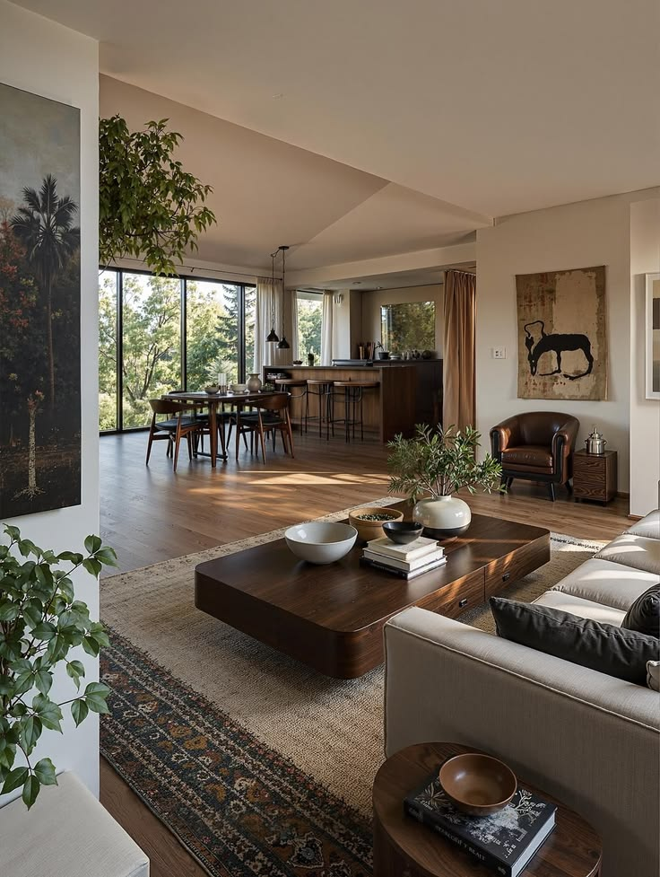
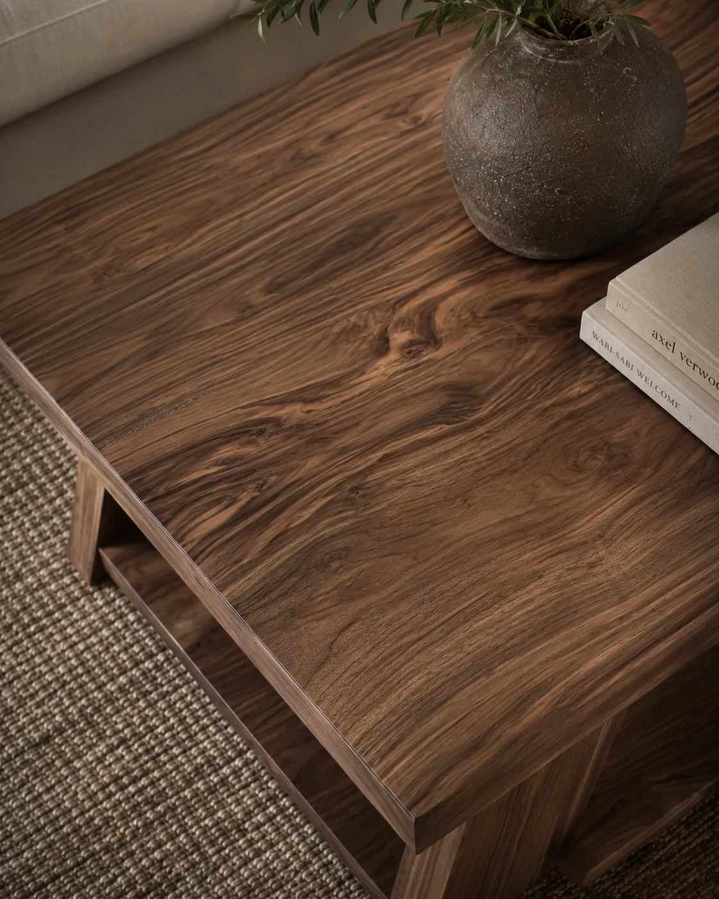

Materiales naturales
La madera es la protagonista. Valoramos sus tonos, texturas y características propias.

ARDOL · CARPINTERÍA FINA
Creemos que los muebles son más que objetos: son parte de los momentos que hacen de un espacio un hogar.
QUIÉNES SOMOS
En ARDOL creemos en la belleza de los materiales naturales y en el valor de crear piezas que acompañen la vida cotidiana.
Nuestra inspiración nace de la madera, sus vetas, sus tonos y la personalidad única que aporta a cada espacio.
Diseñamos muebles que equilibran funcionalidad, sencillez y elegancia.

NUESTRA FILOSOFÍA
Preferimos los materiales honestos, las formas atemporales y los detalles que tienen un propósito. Para nosotros, un buen diseño no necesita excesos: necesita equilibrio.
La madera es la protagonista. Valoramos sus tonos, texturas y características propias.
Creamos piezas pensadas para disfrutarse todos los días, sin perder su esencia estética.
Buscamos que cada mueble conserve su belleza y utilidad con el paso del tiempo.

EL VALOR DE CREAR